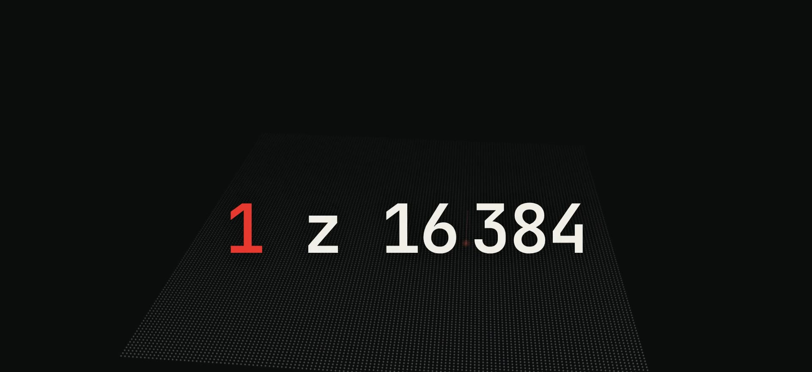
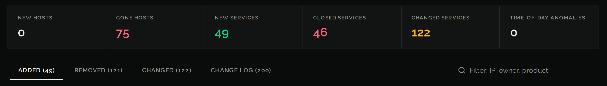
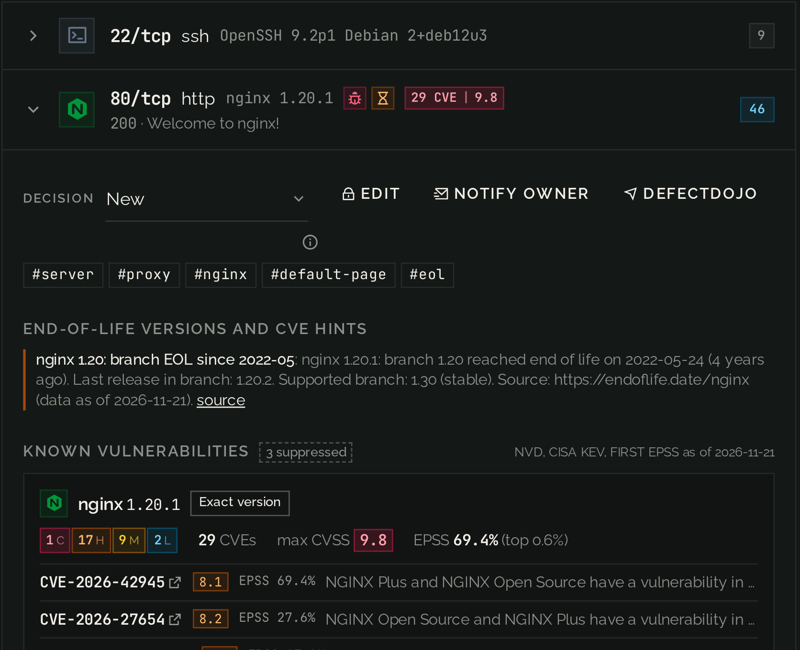
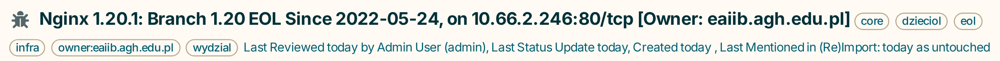
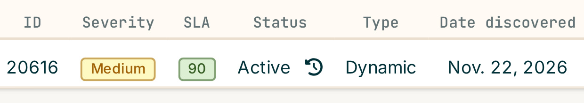
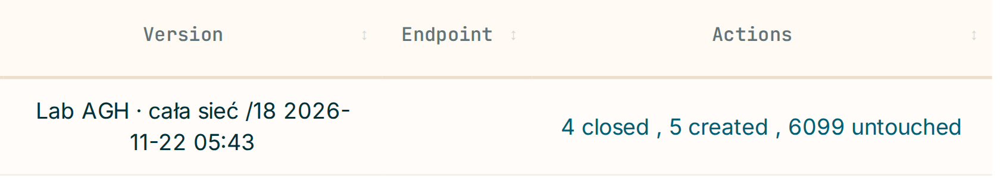
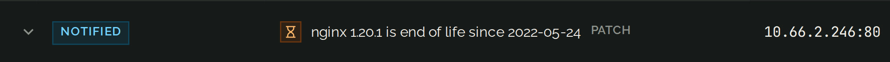
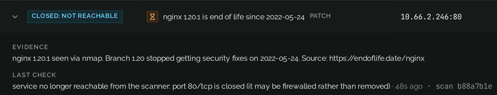
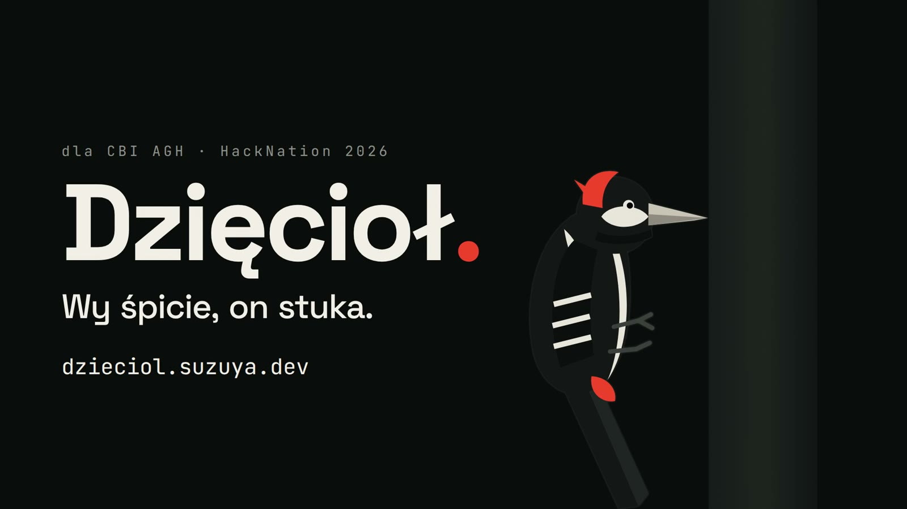

Dzięcioł.
Wy śpicie, on stuka.

W nocy jeden z nich zaczął serwować nginx, który od 2022 roku nie dostaje poprawek.
Rano nikt o tym nie wie. Wydziały stawiają usługi same, a sieć AGH to setki właścicieli.
22:00 skan06:0006:0106:0206:03noc 2
Cała sieć /18, 16 384 adresy, w niecałe 10 minut.
znalezione: 1 497 hostów → 3 970 usług
limit
1 500 pkt/s na całą sieć
backoff
timeouty, 429, RST → wolniej
zapytania
tylko GET i HEAD
nmap
bez --script, -A, -O
hosty
100%
porty
3 961 / 3 961
usługa · produkt
97,5% · 94,5%
wersja
96,7%
22:0006:00 różnica06:0106:0206:03noc 2
Rano jedna strona mówi, co się pojawiło, co zniknęło i co się zmieniło.

pojawiło się
zniknęło
zmieniło się
100% nowych i znikających hostów i portów (lab) · zmiany usług: F1 89,7%
22:0006:0006:01 rozpoznanie06:0206:03noc 2

Debian: bez fałszywych CVE
3 CVE odrzucone sondą HTTP/2
Wersja z banera to dopiero hipoteza.
sonda HTTP/2
port 80 odpowiada HTTP/1.1, więc 3 z 32 CVE dla nginx odpadają
pakiet
OpenSSH 2+deb12u3 z Debiana: poprawki przeniesione, bez fałszywego KEV
w labie
hosty z KEV: 1 176 → 419
sygnatury
66 wbudowanych, 15 typów dopasowań, własne z walidatorem
22:0006:0006:0106:02 właściciel06:03noc 2
Temat: [CBI AGH] Wymagane działanie: nginx 1.20.1 bez wsparcia (EOL) od 2022-05-24
Szanowni Państwo,
Nasz system monitorowania sieci wykrył problem na hoście, którym Państwo administrują (w naszej ewidencji: eaiib.agh.edu.pl).
Problem: nginx 1.20.1 bez wsparcia (EOL) od 2022-05-24
Adres: 10.66.2.246:80/tcp
Zalecenie: Zaktualizować nginx do wersji 1.30 (stable) lub nowszej albo wyłączyć usługę, jeśli nie jest potrzebna.
Prosimy o aktualizację w terminie do 2027-02-19 i o odpowiedź na tę wiadomość po zakończeniu prac.
Jedno kliknięcie i właściciel dostaje zgłoszenie po polsku.
właściciel
reguła 10.66.2.0/24 → EAIiIB
termin
ten sam dzień co SLA w DefectDojo
kanał
e-mail albo webhook Teams lub Slack
22:0006:0006:0106:0206:03 DefectDojonoc 2
Samo trafia do DefectDojo. I tylko raz.

właściciel w tagu
finding #20616 po pierwszym skanie

kolejny skan tej samej sieci

6 099 bez zmian · 5 nowych · 4 zamknięte · jeden test dla całego inwentarza
22:0006:0006:0106:0206:03noc 2 · weryfikacja
Następny skan sprawdza i mówi uczciwie, co zobaczył.
noc 1 · zgłoszenie wysłane

noc 2 · CLOSED: NOT REACHABLE · port 80/tcp zamknięty, może być za firewallem

Każde kryterium ma dowód.
| kryterium | waga | dowód |
|---|
| wykrywanie i identyfikacja | 30% | /18 w 9:48, hosty 100%, wersje 96,7% |
| jakość i integracja | 20% | DefectDojo bez duplikatów, jeden plik, lab jury: 0 nieudanych |
| wykrywanie zmian | 15% | diff 100% dla hostów i portów, cykl życia hostów |
| bezpieczeństwo skanu | 15% | limit pakietów, okno, backoff, tylko GET i HEAD |
| fingerprinting | 10% | 66 sygnatur, sonda HTTP/2, pakiety dystrybucji |
| role i ochrona danych | 10% | 4 role i własne, AES-256-GCM na każdym polu, audyt |

Sprawdźcie sami.
1
2
Scans → Quick scan
→ Scan the lab, jeden klik
albo jedna komenda u Was